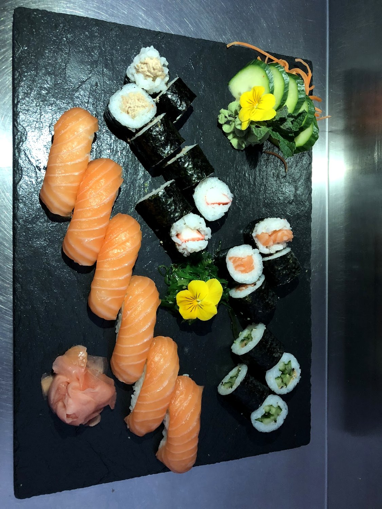
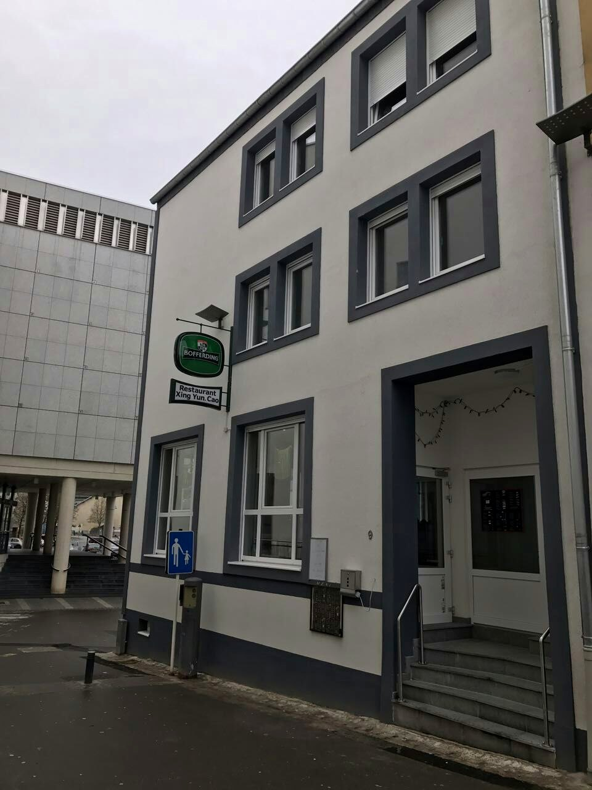
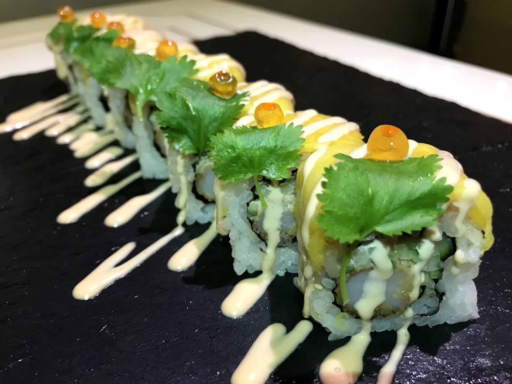
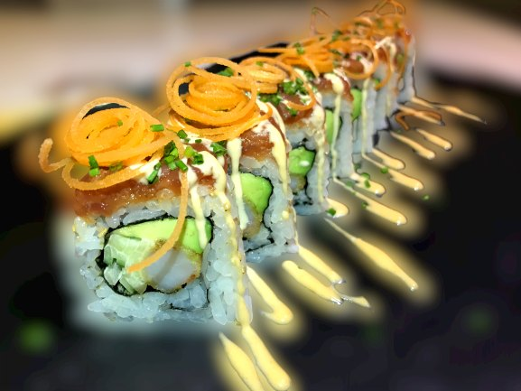
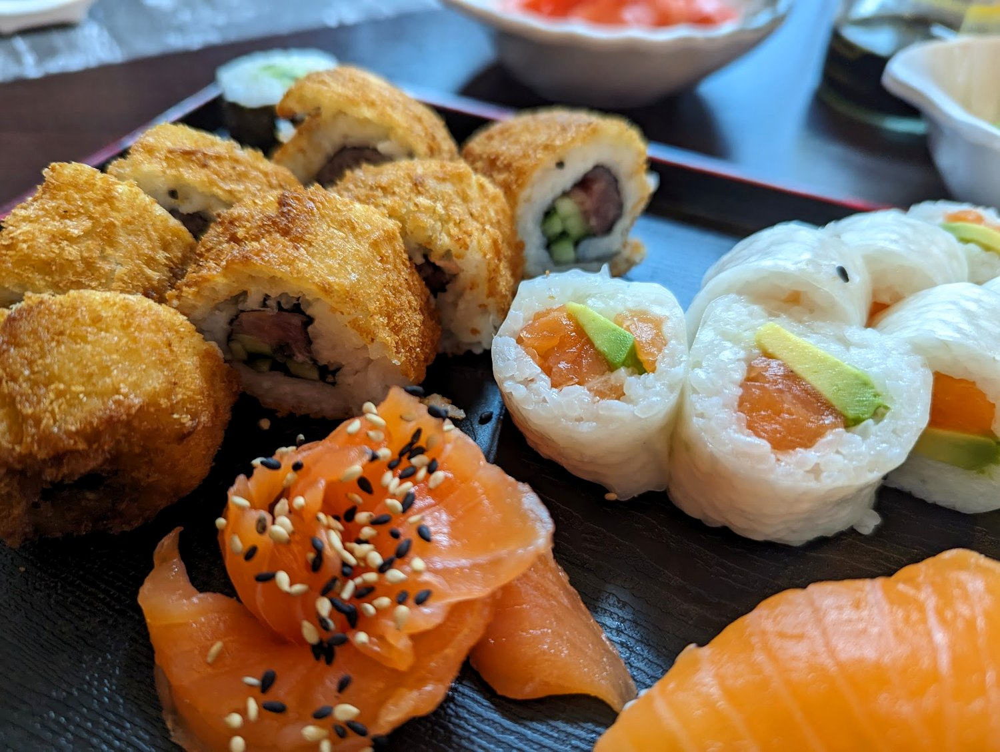
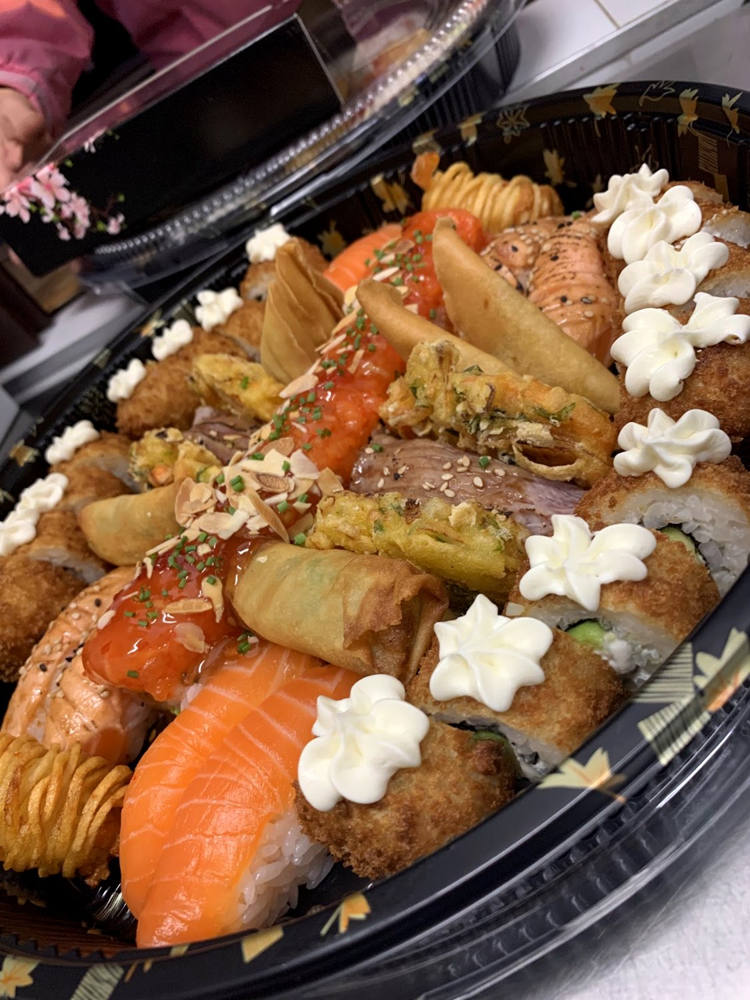
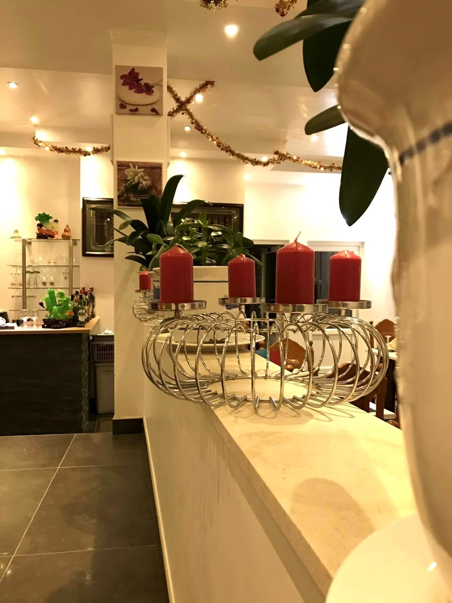
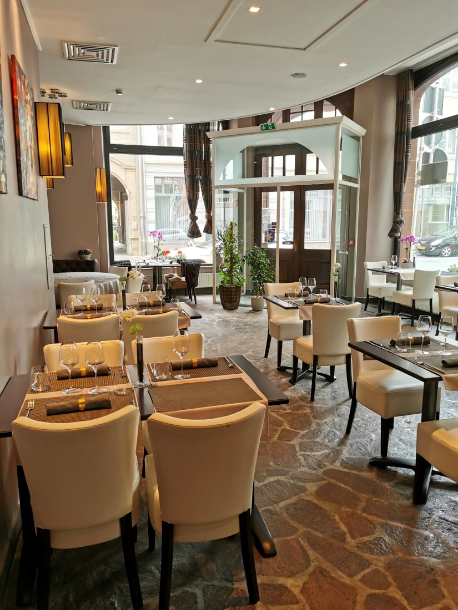

Sushi Iwo
Le poisson tranché au comptoir, à la minute — au cœur du nord du pays.

Dressé à la mainFraîcheur & précision.
Le poisson est tranché au comptoir, le riz assaisonné juste, chaque pièce dressée à la main — nigiri, maki, sashimi et tartares.
Ici, le geste compte autant que le produit. On regarde le comptoir travailler, on commande une sélection, et l'assiette arrive nette, précise, fraîche. Rien de superflu. Une maison familiale, tenue avec soin.
La table japonaise
Nigiri, maki roulés à la commande, sashimi, tartares et grands plateaux à partager — la fraîcheur d'abord.






Ce qu'on prépare
Les classiques du comptoir — nigiri, maki, sashimi, tartares, et des plateaux composés.
Nigiri & sashimi
Maki & rolls
Les plateaux
Chaud & à côté
Plats d'après les photos publiques de la maison, à titre indicatif. Aucun prix n'est publié en ligne : la carte et les prix sont à confirmer sur place.
Nous trouver
adresse exacte à confirmer
Numéro à confirmer
horaires à confirmer